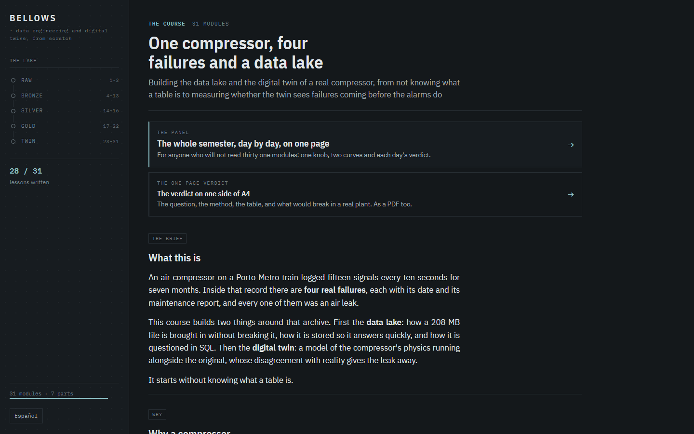

31 de 31 módulos en español y 28 en inglés, con el panel y el folio, publicados.
Fuelle
Un lago de datos y un gemelo digital construidos desde cero en módulos bilingües, sobre 1.516.948 lecturas del compresor de aire de un tren del Metro de Oporto.

- El problema
- Un archivo público de la UCI: 1.516.948 lecturas, una cada diez segundos, quince señales, siete meses de 2020, 208 MB de CSV. Cuatro fugas de aire documentadas con fecha, y una ficha que dice que el compresor arranca a 8,2 bar cuando el archivo dice 8,05.
- Cómo lo resolví
- Bronce, plata y oro en Parquet con DuckDB, una capa de oro modelada en dbt, el viaje en el tiempo comparado en Delta e Iceberg, los mismos datos servidos desde PostgreSQL con restricciones, índices y una copia restaurada, y un gemelo de primeros principios: cuatro números medidos del lago y sostenidos por un balance de aire que cierra al 0,7 %.
- El resultado
- Un detector que pilla 4 de las 4 fugas documentadas con 1,5 falsas alarmas al mes, donde la alarma que la máquina ya lleva pilla 2 con 11,4. Como predictor no funciona, un aviso de cuatro y con un solo día, y el curso publica las dos notas una al lado de la otra.
Medido
La ventana sana no estaba sana
Buscar los parámetros del gemelo no coincidía con medirlos. Persiguiendo por qué aparecieron huecos del registro contados como tiempo de compresor, y después doce días de marzo en los que el ciclo de trabajo sube de 0,06 a 0,58, el aceite se calienta diez grados y la alarma de baja presión salta por primera vez en todo el registro: una avería que nadie apuntó, dentro de la ventana con la que se calibraba el gemelo. Se recalibró con febrero solo y se reescribieron tres módulos ya publicados.
Todos los demás proyectos de esta página parten de un CSV que alguien ya había limpiado. Este va de dónde sale ese archivo: un lago construido capa a capa desde 208 MB de datos crudos de un compresor, y encima un gemelo digital que dice claro lo que ve y lo que no. Lo escribí para alguien que empieza de cero, que es de donde empecé yo.
Cada número del curso sale de la corrida de un script, y diez comprobaciones se ponen entre una lección y un commit: toda consulta publicada se ejecuta contra el lago y tiene que imprimir lo que dice la lección, todo número de la prosa tiene que existir en un fichero de resultados, y las ediciones en español y en inglés tienen que coincidir en cada cifra. Han cazado errores de verdad, uno de ellos en mis propias mediciones, que destapó un módulo posterior.
Las lecciones de SQL corren en el navegador del lector. La página descarga un motor de base de datos solo cuando se lo piden, 8,12 MB, ejecuta la consulta del lector contra datos reales del compresor y comprueba el resultado, no el texto. Las lecciones del gemelo llevan perillas cuya física corre antes en Python, así que la figura y la perilla no pueden llevarse la contraria.
El lago ya se reconstruye solo: se borra entero, se le pide al orquestador, y las catorce tablas vuelven idénticas byte a byte. Para quien no va a leer treinta y un módulos hay un panel, el semestre entero en una página, donde cada día enseña lo que trabajó el compresor contra lo que habría trabajado sano. Y hay un folio con el veredicto y la parte que más me importa: qué de todo esto aguantaría una planta de verdad y qué no.
Hecho con
- Python
- DuckDB
- Parquet
- dbt
- Delta Lake
- Apache Iceberg
- PostgreSQL
- WebAssembly
- matplotlib
- HTML
- CSS
Abrir el panelAbrir el cursoEl veredicto en un folioVer el código